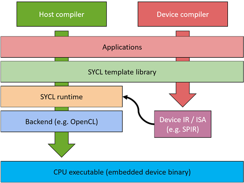
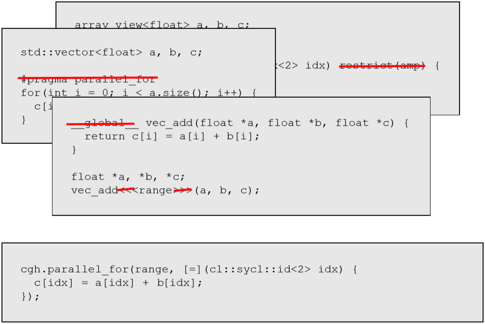
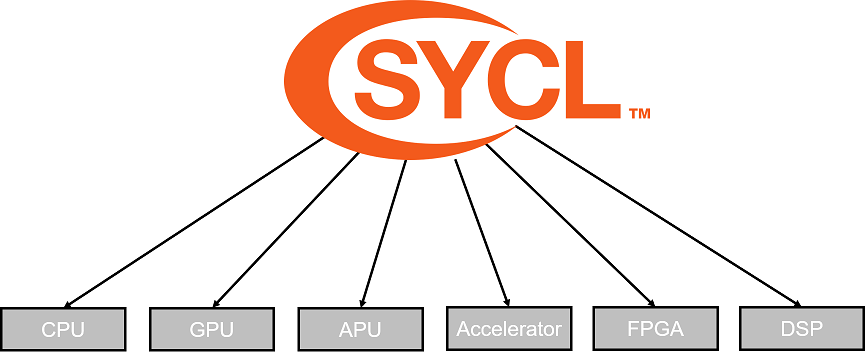
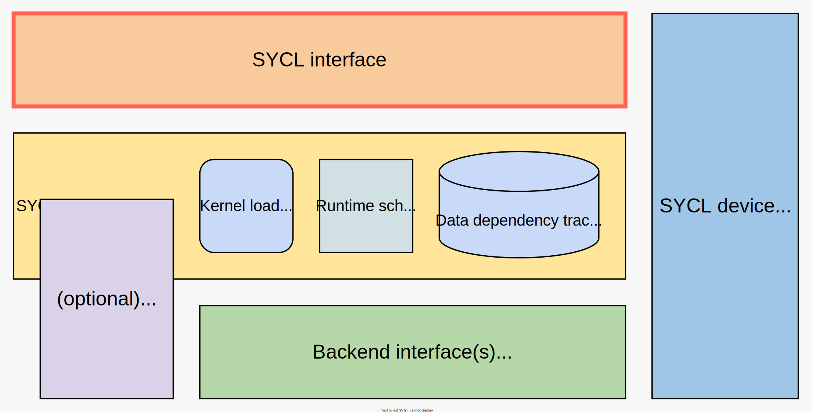

!<!DOCTYPE html>

<html>
  <head>
    <meta charset="utf-8">
    <link rel="stylesheet" href="../common-revealjs/css/reveal.css">
    <link rel="stylesheet" href="../common-revealjs/css/theme/white.css">
    <link rel="stylesheet" href="../common-revealjs/css/custom.css">
    <script>
      // This is needed when printing the slides to pdf
      var link = document.createElement( 'link' );
      link.rel = 'stylesheet';
      link.type = 'text/css';
      link.href = window.location.search.match( /print-pdf/gi ) ? '../common-revealjs/css/print/pdf.css' : '../common-revealjs/css/print/paper.css';
      document.getElementsByTagName( 'head' )[0].appendChild( link );
    </script>
    <script>
      // This is used to display the static images on each slide,
      // See global-images in this html file and custom.css
      (function() {
	  if(window.addEventListener) {
	      window.addEventListener('load', () => {
		  let slides = document.getElementsByClassName("slide-background");
		  
		  if (slides.length === 0) {
		      slides = document.getElementsByClassName("pdf-page")
		  }
		  
		  // Insert global images on each slide
		  for(let i = 0, max = slides.length; i < max; i++) {
		      let cln = document.getElementById("global-images").cloneNode(true);
		      cln.removeAttribute("id");
		      slides[i].appendChild(cln);
		  }
		  
		  // Remove top level global images
		  let elem = document.getElementById("global-images");
		  elem.parentElement.removeChild(elem);
	      }, false);
	  }
      })();
    </script>
    <style>
      .container{
	  display: flex;
      }
      .col{
	  flex: 1;
      }
    </style>
  </head>
  <body>
    <div class="reveal">
      <div class="slides">
	<div id="global-images" class="global-images">
	  
	  
	  
	</div>
	<section data-markdown
		 data-separator="^---\n"
		 data-separator-vertical="^vvv\n"
		 data-separator-notes="^Speaker Notes:">
	  <textarea data-template>

<!-- Ideally, only the markdown below needs editting to change slides. Focus on content! -->

## What is SYCL?

---
## Learning Objectives
* Learn about the SYCL specification and its implementations
* Learn about the components of a SYCL implementation
* Learn about how a SYCL source file is compiled
* Learn where to find useful resources for SYCL
---
#### What is SYCL?

SYCL is a single source, high-level, standard C++ programming model, that can target a range of heterogeneous platforms

Speaker Notes:
We'll examine what each of the parts of this statement means.
---
#### What is SYCL?
<span style="color:blue; background-color:yellow">JAMES TBD: UPDATE GRAPHIC</span><br/>
A first example of SYCL code. Elements will be explained in coming sections!

---
## SYCL is...

* SYCL extends C++ in two key ways:
  * device discovery (and information)
  * device control (kernels of work, memory)
* SYCL is modern C++
* SYCL is open, multivendor, multiarchitecture
---
#### What is SYCL?
SYCL is a ***single source***, high-level, standard C++ programming model, that can target a range of heterogeneous platforms.

<!-- Two column magic needs HTML in the markdown ; unfortunately as a side-effect some markdown stops working so we resort to HTML -->
<div class="container">

  <div class="col">
    
  </div>

  <div class="col">
    <ul>
      <li>SYCL allows you to write both host CPU and device code in the same C++ source file
      <li>This requires two compilation passes; one for the host code and one for the device code
    </ul>
  </div>

</div>
 
Speaker Notes:
Single source means that SYCL kernel source code can live in the same source file as the other code you are using.
This is not the case with something like OpenCL, another heterogeneous programming interface, where the kernel code lives in a separate file.
Your kernel contains the code you want to execute on parallel hardware, i.e the bit you want to accelerate such as a vector addition
---
#### What is SYCL?
SYCL is a single source, ***high-level***, standard C++ programming model, that can target a range of heterogeneous platforms.

<!-- Class 'container' is used to reduce font size for a section ; unfortunately as a side-effect some markdown stops working so we resort to HTML -->
<div class="container">
  <ul>
    <li>SYCL provides high-level abstractions over common boilerplate code 
      <ul>
	<li>Platform/device selection
	<li>Buffer creation and data movement
	<li>Kernel function compilation
	<li>Dependency management and scheduling
      </ul>
  </ul>
</div>
---
#### What is SYCL?
SYCL is a single source, high-level ***standard C++*** programming model, that can target a range of heterogeneous platforms.


<!-- Two column magic needs HTML in the markdown ; unfortunately as a side-effect some markdown stops working so we resort to HTML -->
<div class="container">

  <div class="col">
    
  </div>

  <div class="col">
    <ul>
      <li>SYCL allows you to write standard C++
	<ul>
	  <li>SYCL 2020 is based on C++17
	</ul>
      <li>Unlike the other implementations shown on the left there are:
	<ul>
	  <li>No language extensions 
	  <li>No pragmas 
	  <li>No attributes
	</ul>
    </ul>
</div>

Speaker Notes:
SYCL only uses standard C++ code for both the host applications and kernel functions
Other models use language extensions such as pragmas, attributes or keywords to indicate device code
---
#### What is SYCL?
SYCL is a single source, high-level standard C++ programming model, that can **target a range of heterogeneous platforms**
<span style="color:blue; background-color:yellow">JAMES TBD: Maybe Improve GRAPHIC</span><br/>
<!-- Two column magic needs HTML in the markdown ; unfortunately as a side-effect some markdown stops working so we resort to HTML -->
<div class="container">

  <div class="col">
    
  </div>

  <div class="col">
    <ul>
      <li>SYCL can target any device supported by its backend
      <li>SYCL can target a number of different backends
    </ul>
    SYCL has been designed to be implemented on top of a variety of backends. Current implementations support backends such as OpenCL, CUDA, HIP, OpenMP and others.
</div>

Speaker Notes:
SYCL has been designed to enable developers to write C++ code that can be used to target different types of processors that are part of a heterogeneous system. 
This means that you can write your code and deploy it to devices that support the SYCL implementation's back-end. 
Whilst the current specification of SYCL is bound to OpenCL, it is possible to support non-OpenCL back-ends. For example hipSYCL targets AMD's HIP interface and ComputeCpp targets NVidia's ptx instruction set
---
#### SYCL specification
<span style="color:blue; background-color:yellow">JAMES TBD: UPDATE GRAPHIC</span><br/>

---
#### SYCL implementations
<span style="color:blue; background-color:yellow">JAMES TBD: UPDATE GRAPHIC</span><br/>

---
#### What a SYCL implementation looks like
<!-- Two column magic needs HTML in the markdown ; unfortunately as a side-effect some markdown stops working so we resort to HTML -->
<div class="container">

  <div class="col">
    
  </div>

  <div class="col">
    <ul>
      <li>The SYCL interface is a C++ template library that developers can use to access the features of SYCL
      <li>The same interface is used for both the host and device code
      <li>The host is generally the CPU and is used to dispatch the parallel execution of kernels
      <li>The device is the parallel unit used to execute the kernels, such as a GPU
    </ul>
</div>
---
#### What a SYCL implementation looks like


<!-- Class 'container' is used to reduce font size for a section ; unfortunately as a side-effect some markdown stops working so we resort to HTML -->
<div class="container">
The SYCL runtime is a library that schedules, and executes work.
<br/>
It loads kernels, tracks data dependencies, and schedules commands
</div>

---
#### What a SYCL implementation looks like
<!-- Two column magic needs HTML in the markdown ; unfortunately as a side-effect some markdown stops working so we resort to HTML -->
<div class="container">

  <div class="col">
    
  </div>

  <div class="col">
    <ul>
      <li>There is no Host Device in SYCL (as of SYCL 2020)
      <li>SYCL 1.2.1 had a concept of a 'magical' host device - an emulated backend
      <li>SYCL 2020 implementations generally offer a CPU device
      <li>Often, the best debugging on a platform is using a CPU device
      <li>Yet, debugging off the CPU is important to discover offloading issues
    </ul>
</div>
---
#### What a SYCL implementation looks like
<!-- Two column magic needs HTML in the markdown ; unfortunately as a side-effect some markdown stops working so we resort to HTML -->
<div class="container">

  <div class="col">
    
  </div>

  <div class="col">
    <ul>
      <li>The back-end interface is where the SYCL runtime calls down into a back-end in order to execute on a particular device  
      <li>Many implementations provide OpenCL backends, but some provide additional or different backends.
    </ul>
</div>
---
#### What a SYCL implementation looks like
<!-- Two column magic needs HTML in the markdown ; unfortunately as a side-effect some markdown stops working so we resort to HTML -->
<div class="container">

  <div class="col">
    
  </div>

  <div class="col">
    <ul>
      <li>The SYCL device compiler is a C++ compiler which can identify SYCL kernels and compile them down to an IR or ISA
	<ul>
	  <li>This can be SPIR, SPIR-V, GCN, PTX or any proprietary vendor ISA
	</ul>
    </ul>
    IR = Intermediate Representation
    <br/>
    ISA = Instruction Set Architecture
</div>
---
#### Std C++ compilation model

This is the typical compilation model for a C++ source file.
---
#### Std C++ compilation model

So how do you compile a source file to also target the GPU?
---
#### Std C++ compilation model

* As SYCL is single source the kernel functions are standard C++ function objects or lambda expressions.
* These are defined by submitting them to specific APIs.
---
#### Std C++ compilation model

* As well as the standard C++ compiler, the source file is also compiled by a SYCL device compiler.
* This produces a device IR such as SPIR, SPIR-V or PTX or ISA for a specific architecture containing the GPU code.
---
#### Std C++ compilation model

* The CPU object is then linked with the device IR or ISA to form a single executable with both the CPU and GPU code.
---
#### Std C++ compilation model

* This is the multi-compiler compilation model.
* This allows the host compiler (MSVC, clang, icx, gcc) to be independent of the SYCL device compiler.
---
#### Std C++ compilation model

* SYCL also supports a single-compiler compilation model.
* Where both the host compiler and SYCL device compiler are invoked from the same driver.
---
## Where to Get Started with SYCL
<span style="color:blue; background-color:yellow">JAMES TBD: ADD BOOK COVER</span><br/>
* Visit https://sycl.tech to find out about all the SYCL book, implementations, tutorials, news, and videos
* Visit https://www.khronos.org/sycl/ to find the latest SYCL specifications
* Checkout the documentation provided with one of the SYCL implementations.
---
## Questions
---
#### Exercise
Code_Exercises/Exercise_1_Big_Hello_SYCL/source
  * Everyone set up to compile
  * Everyone set up to run
  * First program has a little of everything
  * Focus on compile and run, and we'll grow from there


	  </textarea>
	</section>
      </div>
    </div>
    <script src="../common-revealjs/js/reveal.js"></script>
    <script src="../common-revealjs/plugin/markdown/marked.js"></script>
    <script src="../common-revealjs/plugin/markdown/markdown.js"></script>
    <script src="../common-revealjs/plugin/notes/notes.js"></script>
    <script>
      Reveal.initialize({mouseWheel: true, defaultNotes: true,margin:0.04});
      Reveal.configure({ slideNumber: true });
    </script>
  </body>
</html>
